まずレイミーと二回会話してアルカナの取得の説明を聞いて、レイールと話す
アルカナ適合者についてを選んで、自分が前回選んだアルカナを選ぶ
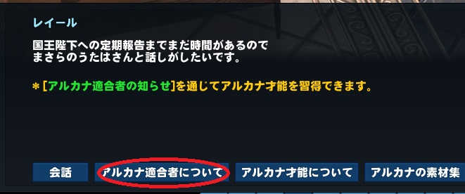
次元跳躍イベントで習得クエストを省略していけるので、「要約本で進行(イベント特典)」を選ぼう
※特にアルケミックスティンガーを選んだ人は絶対！じゃないと手伝う人がいないと詰む
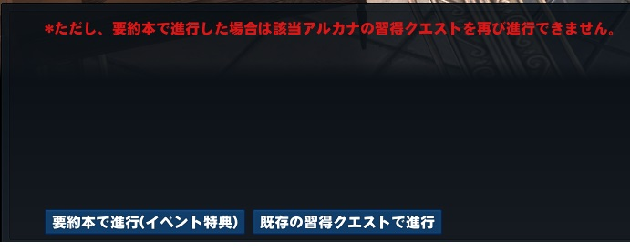会話後クエスト欄アルカナタブの任務完了押すの忘れずに
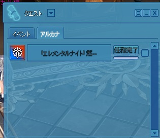
レイミーと二回会話して転生する
転生時は性別と年齢と外見を変えられる
※レベルと歳をリセットのチェックは絶対に「外さないで」！転生のメイン目的がレベルのリセットだから
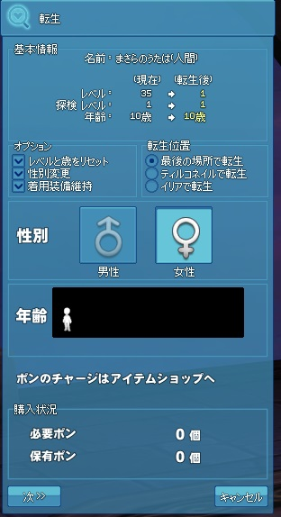才能に選んだスキル群は修練回数が二倍になる、また一部生産レシピはその生産才能時でしか生産できない
英雄才能選ぶと複数の才能が適用、スキルが覚える、しかもプレシーズン中は無料
レイミーと話してリンク解放の説明を受け、「アルカナ6種 - 20レベル達成及びリンク2段階達成結びボックス」を貰って、Ctrlプラスクリックで使う
協会室の本の祭壇にクリックし、リンク解放のタブ→リンク解放を二回する
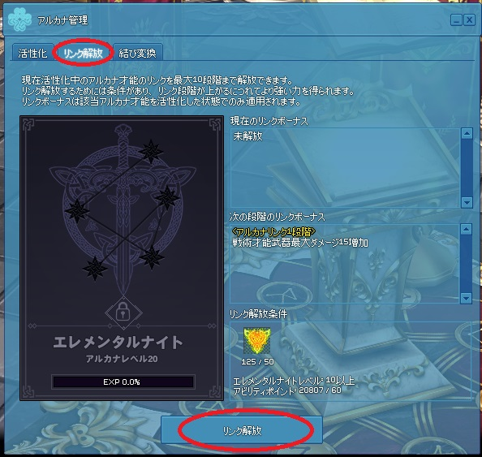
レイミーと会話しレンタル管理人サシャのところへ飛ばされる
武器と防具をレンタルする、装備するのを忘れずに(武器と防具にCtrlプラスクリック)
※Ｒ改造は物理武器におすすめ、Ｓ改造は魔法武器。防具の服/鎧は専用タブにある
メニューバーの「ペット/精霊」アイコン→精霊→強化
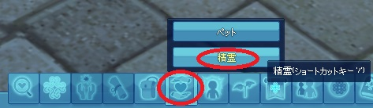左の二行だけ全部振り分けして適用を押す
※ただし弓だけは最後の「究極の弓」だけは振り分けないように
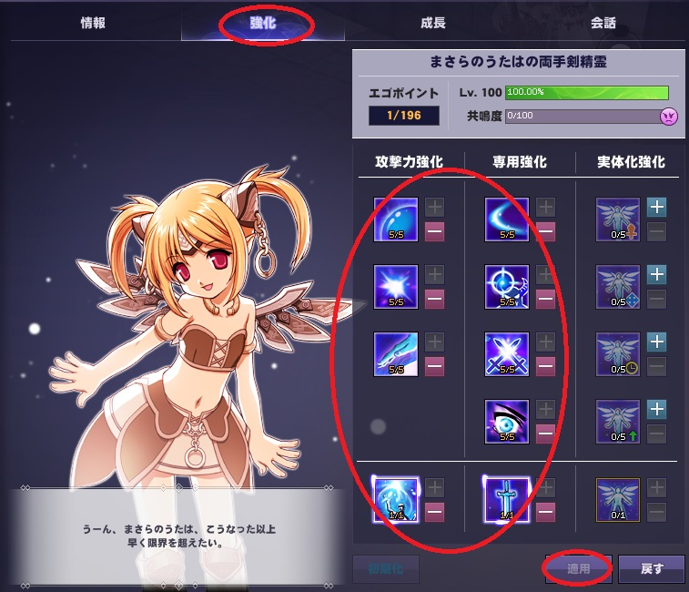メニューバーの「キャラクター」アイコン→才能→アルカナタブ→「アルカナ協会室」をクリックで戻ってレイミーと会話
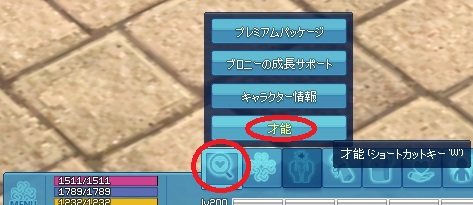 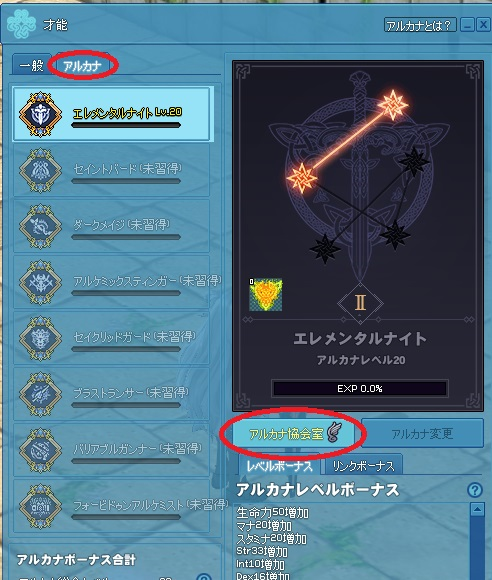
同じ手順で貰った箱を開けて、リンク解放を４段階までする
レイミーと会話し、貰ったスペシャル秘薬をCtrlプラスクリックで使用
貰った箱を開けて、リンク解放を６段階までする
レイミーと会話し、ダンジョンガイドからハードモード「アルビ」ダンジョンへ飛び、そこにいるレイミーと話す
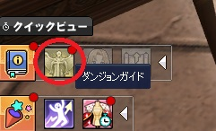 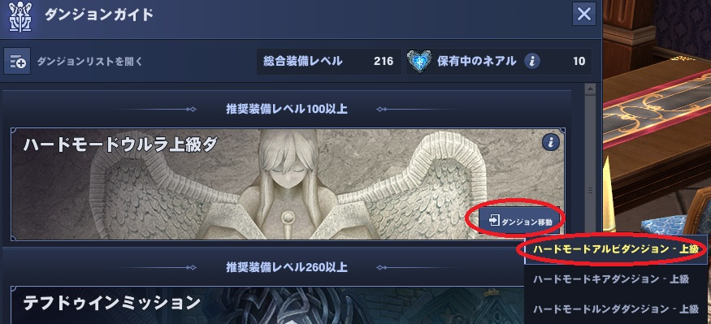才能ウィンドウのアルカナタブから協会室へ戻りレイミーから箱貰って、リンク解放を８段階までする
レイミーと話してもう一度ハード「アルビ」ダンジョンへ
女神像をクリックして１ゴールドを捧げるを選んで入場
※ハードダンジョンだけ１ゴールドでも毎回違う場所へ入場する、一般ダンジョンはクリア済みか他人が作ったダンジョンに入ってしまうので注意
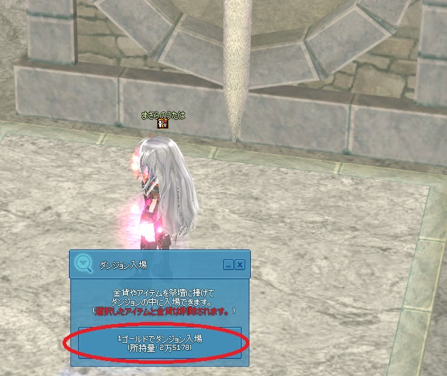
スイッチ部屋、４個のスイッチ中一個だけ正解で叩くと扉が開く。失敗すると敵が出る
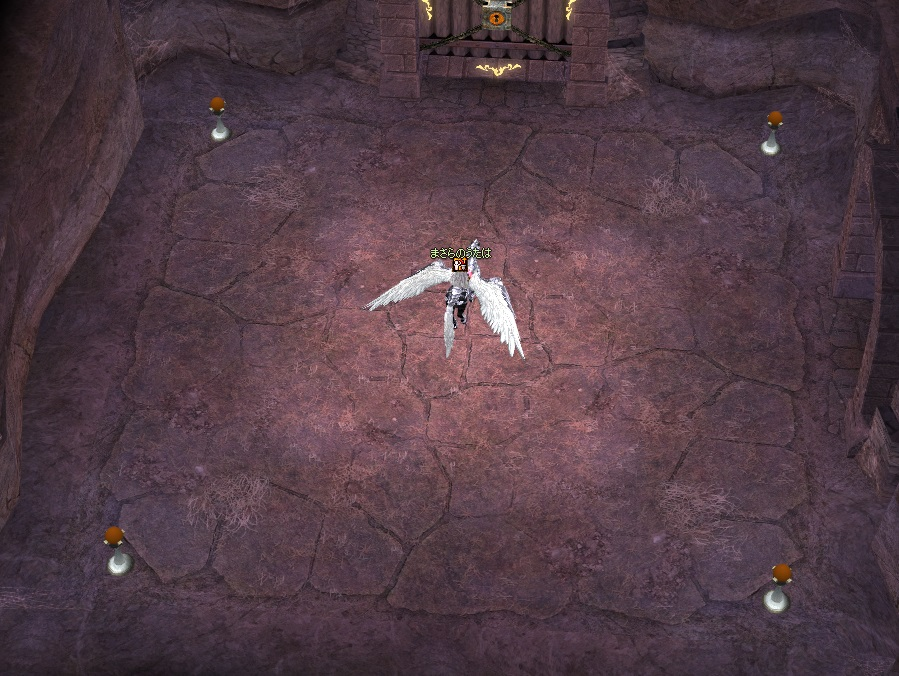
通路の宝箱群、宝箱の中に一つだけが鍵が入ってる正解、ペット乗って素早くチェックすれば敵からの攻撃を免れる
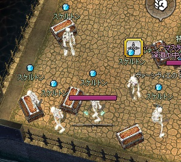
ハードダンジョンとテフドゥインだけ宝箱開けるときにネアル使うかって聞いてくる
※ネアル使わないと報酬が装備とジェムだけ、しかもレアドロップが出ないので使いましょう
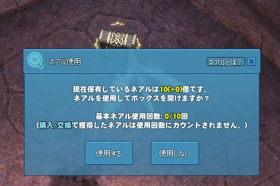
協会室へ戻ってレイミーから最後の箱貰って、リンクを１０段階にすればアルカナ完成です
※アルカナは一つだけじゃなくて全部取れるのでもし貰うアルカナ失敗したと感じても諦めないで！
レイミーと話してアイプラムのところへ
アイプラムと話してイベントに参加するを選ぶ
クイックビューのフィーバーシーズンアイコンをクリック
バフ選択を押して好きなバフを７個選ぼう！
※金土日曜日は全バフ適用なので選べない、平日になったら忘れずに選ぼう
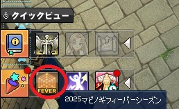 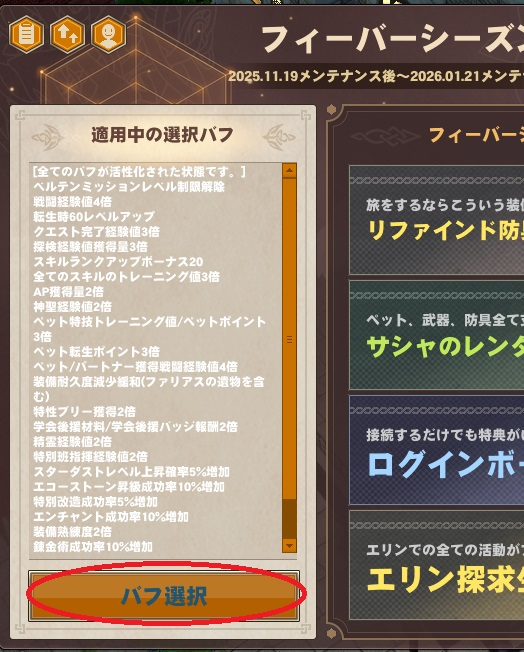
Tips：マビノギのいろんなウィンドウは端っこを押したまま伸ばすとウィンドウが広がる